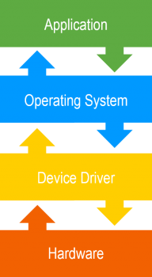
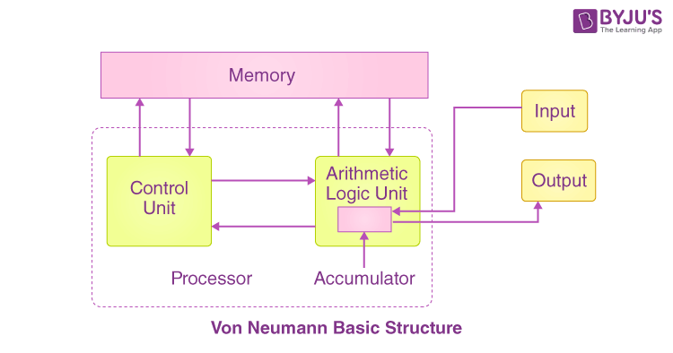
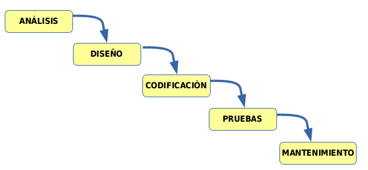
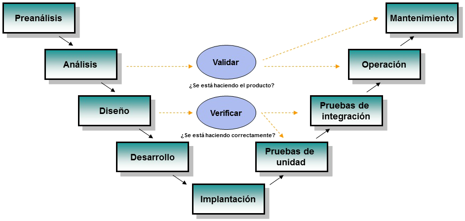
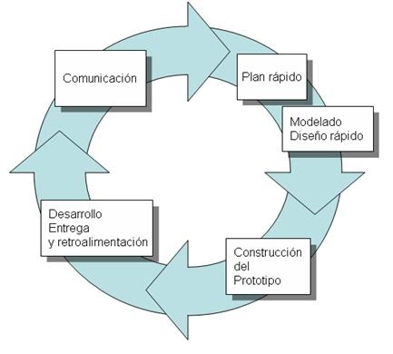
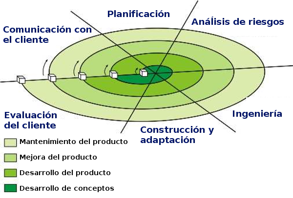
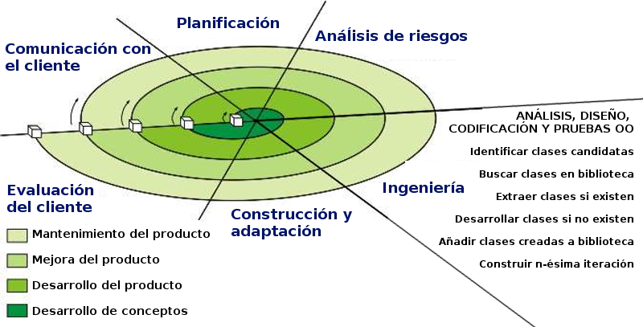
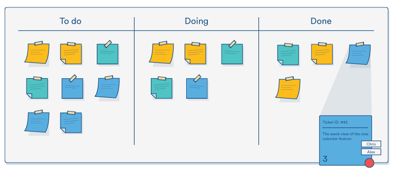
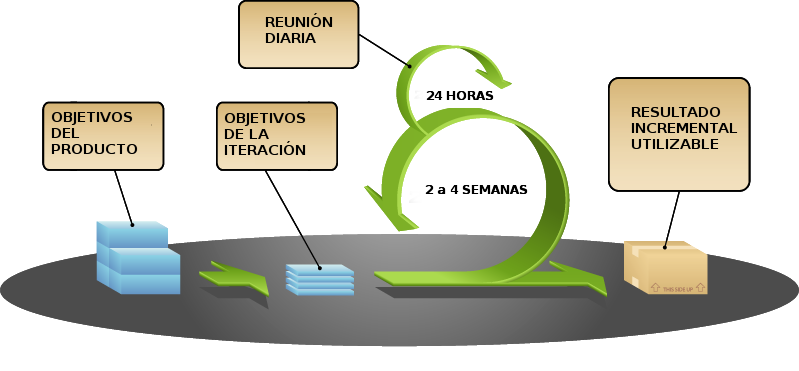

Elementos del desarrollo de Software
1. Introducción
- En esta Unidad aprenderemos a
- Reconocer la relación de los programas con los componentes del sistema informático.
- Diferenciar código fuente, objeto y ejecutable.
- Identificar las fases de desarrollo de una aplicación informática.
- Clasificar los lenguajes de programación.
1.1. Tipos de software
- De sistema (Sistema operativo, drivers -controladores-)
- Los drivers son los controladores de dispositivos.
- El firmware es el programa que funciona dentro de un dispositivo
- BIOS/UEFI es el firmware de la placa base de un PC
- De aplicación (Suite ofimática, Navegador, Edición de imagen, …)
- De desarrollo (Editores, compiladores, interpretes, …)


1.2. Relación Hardware-Software
- Disco duro : almacena de forma permanente los archivos ejecutables y los archivos de datos.
- El disco duro se considera un periférico de E/S (Entrada/Salida).
- Memoria RAM : almacena de forma temporal el código binario de los archivos ejecutables y los archivos de datos necesarios.
- CPU : lee y ejecuta instrucciones almacenadas en memoria RAM, así como los datos necesarios.
- E/S: recoge nuevos datos desde la entrada, se muestran los resultados, se leen/guardan a disco, …
1.3. ¿pero qué es un ordenador?
- Es un dispositivo capaz de
- Ejecutar órdenes de forma secuencial
- Con dos tipos especiales de órdenes
- Condicionales: se ejecutan dependiendo de los datos disponibles
- Salto: se interrumpe el orden normal de ejecución
- Preguntas:
- ¿una reloj digital es un ordenador?
- ¿una calculadora es un ordenador?
- ¿un vaper es un ordenador?
- Conclusión
- Muchísimos dispositivos contienen ordenadores
- No todos esos ordenadores se exponen al usuario final
- El usuario final no puede modificar los programas
1.4. Arquitectura de Von neuman
- La máquina de Turing distinguía entre datos y programa
- Pero los programas son también datos. Esto posibilita:
- Emuladores
- Programas que hacen programas
- Actualización de software

Figura 1: Arquitectura de Von Neuman (Fuente cdn1.byjus.com)
1.5. Códigos fuente, objeto y ejecutable
- Código fuente: archivo de texto legible escrito en un lenguaje de programación.
- Código objeto (intermedio): archivo binario no ejecutable.
- Pueden ser ya instrucciones legibles por la CPU
- O puede ser un formato intermedio
- Código ejecutable: código máquina
- En lenguajes interpretados no existe código objeto, ni ejecutable. Solo código fuente. Por ejemplo: PHP, Javascript, …
- Aunque podría existir en memoria (JIT compiler)
objdump -d /usr/bin/ls /usr/bin/ls: file format elf64-x86-64 Disassembly of section .init: 000000000000033c <.init>: 33c: f3 0f 1e fa endbr64 340: 48 83 ec 08 sub $0x8,%rsp 344: 48 8b 05 75 2c 02 00 mov 0x22c75(%rip),%rax # 22fc0 <__gmon_start__@Base> 34b: 48 85 c0 test %rax,%rax 34e: 74 02 je 352 <__ctype_toupper_loc@plt-0x67e> 350: ff d0 call *%rax 352: 48 83 c4 08 add $0x8,%rsp 356: c3 ret Disassembly of section .plt: 0000000000000360 <.plt>: 360: ff 35 ca 28 02 00 push 0x228ca(%rip) # 22c30 <error_at_line@@Base+0x21943> 366: ff 25 cc 28 02 00 jmp *0x228cc(%rip) # 22c38 <error_at_line@@Base+0x2194b> 36c: 0f 1f 40 00 nopl 0x0(%rax) 370: f3 0f 1e fa endbr64 374: 68 00 00 00 00 push $0x0 379: e9 e2 ff ff ff jmp 360 <__ctype_toupper_loc@plt-0x670> 37e: 66 90 xchg %ax,%ax 380: f3 0f 1e fa endbr64 ...
1.6. Para entenderlo mejor
- Simulador de CPU: https://cpuvisualsimulator.github.io/
- Compilador online: https://godbolt.org/
2. Ciclo de vida del software
2.1. Ingeniería de software
Disciplina que estudia los principios y metodologías para el desarrollo y mantenimiento de sistemas software.
- Algunos autores consideran que "desarrollo de software" es un término más apropiado que "ingeniería de software" puesto que este último implica niveles de rigor y prueba de procesos que no son apropiados para todo tipo de desarrollo de software.
- Ingeniería del software
2.2. Desarrollo de software
2.2.1. Fases principales
- ANÁLISIS: Qué debe hacer la aplicación.
- DISEÑO: Cómo se va a organizar internamente la aplicación. Sus decisiones no afectan directamente al usario, más allá de elegir una plataforma.
- CODIFICACIÓN: Realización de la aplicación.
- PRUEBAS: Búsqueda de defectos.
- MANTENIMIENTO: Solución de defectos que escaparon a las pruebas, o adaptación a nuevos requisitos.
2.2.2. ANÁLISIS
- Se determina y define claramente las necesidades del cliente y se especifica los requisitos que debe cumplir el software a desarrollar.
- La especificación de requisitos debe:
- Ser completa y sin omisiones
- Ser concisa y sin trivialidades
- Evitar ambigüedades. Utilizar lenguaje formal.
- Evitar detalles de diseño o implementación
- Ser entendible por el cliente
- Separar requisitos funcionales y no funcionales
- Dividir y jerarquizar el modelo
- Fijar criterios de validación
2.2.3. DISEÑO
- Se descompone y organiza el sistema en elementos componentes que pueden ser desarrollados por separado.
- Se especifica la interrelación y funcionalidad de los elementos componentes.
- Las actividades habituales son las siguientes:
- Diseño arquitectónico
- Diseño detallado
- Diseño de datos
- Diseño de interfaz de usuario
2.2.4. CODIFICACIÓN
- Se escribe el código fuente de cada componente.
- Pueden utilizarse distintos lenguajes informáticos y plataformas:
- Aplicación web: javascript, HTML, PHP, JSP, ASP…
- Escritorio: C++, python, java, C#
- Móvil: flutter, kotlin…
2.2.5. PRUEBAS
- El principal objetivo de las pruebas debe ser conseguir que el programa funcione incorrectamente y que se descubran defectos.
- Deberemos someter al programa al máximo número de situaciones diferentes.
2.2.6. MANTENIMIENTO
- Durante la explotación del sistema software es necesario realizar cambios ocasionales.
- Para ello hay que rehacer parte del trabajo realizado en las fases previas.
- Tipos de mantenimiento:
- Correctivo: se corrigen defectos.
- Perfectivo: se mejora la funcionalidad.
- Evolutivo: se añade funcionalidades nuevas.
- Adaptativo: se adapta a nuevos entornos.
¿Qué tipos de mantenimiento suponen una nueva fase de análisis y diseño?
2.3. Resultado tras cada fase (I)
- Ingeniería de sistemas: Especificación del sistema
- ANÁLISIS: Especificación de requisitos del software
- DISEÑO
- arquitectónico: Documento de arquitectura del software
- detallado: Especificación de módulos y funciones
- CODIFICACIÓN: Código fuente
2.4. Resultado tras cada fase (II)
( Continuación )
- PRUEBAS de unidades: Módulos utilizables
- PRUEBAS de integración: Sistema utilizable
- PRUEBAS del sistema: Sistema aceptado
- Documentación: Documentación técnica y de usuario
- MANTENIMIENTO: Informes de errores y control de cambios
2.5. Modelos de desarrollo de software
- Modelos clásicos (predictivos)
- Modelo en cascada
- Modelo en V
- Modelo de construcción de prototipos
- Modelos evolutivos o incrementales
- Modelo en espiral (iterativos)
- Metodologías ágiles (adaptativos)
2.6. Modelo en cascada (I)

Figura 2: Modelo en cascada (Fuente: jamj2000.github.io/entornosdesarrollo)
2.7. Modelo en cascada (II)
- Modelo de mayor antigüedad.
- Identifica las fases principales del desarrollo software.
- Las fases han de realizarse en el orden indicado.
- El resultado de una fase es la entrada de la siguiente fase.
- Es un modelo bastante rígido que se adapta mal al cambio continuo de especificaciones.
- Existen diferentes variantes con mayor o menor cantidad de actividades.
2.8. Modelo en V (I)

Figura 3: Modelo en V (Fuente: jamj2000.github.io/entornosdesarrollo)
2.9. Modelo en V (II)
- Modelo muy parecido al modelo en cascada.
- Visión jerarquizada con distintos niveles.
- Los niveles superiores indican mayor abstracción.
- Los niveles inferiores indican mayor nivel de detalle.
- El resultado de una fase es la entrada de la siguiente fase.
- Existen diferentes variantes con mayor o menor cantidad de actividades.
2.10. Prototipos (I)
- A menudo los requisitos no están especificados claramente:
- por no existir experiencia previa.
- por omisión o falta de concreción del usuario/cliente.

Figura 4: Modelo de construcción de prototipos (Fuente: jamj2000.github.io/entornosdesarrollo)
2.11. Prototipos (II)
- Proceso:
- Se crea un prototipo durante la fase de análisis y es probado por el usuario/cliente para refinar los requisitos del software a desarrollar.
- Se repite el paso anterior las veces necesarias.
2.12. Prototipos (III)
- Tipos de prototipos:
- Prototipos rápidos (desechables)
- El prototipo puede estar desarrollado usando otro lenguaje y/o herramientas.
- Finalmente el prototipo se desecha.
- Prototipos evolutivos
- El prototipo está diseñado en el mismo lenguaje y herramientas del proyecto.
- El prototipo se usa como base para desarrollar el proyecto.
- Prototipos rápidos (desechables)
2.13. Modelo en espiral (I)
- Desarrollado por Boehm en 1988.
- La actividad de ingeniería corresponde a las fases de los modelos clásicos: análisis, diseño, codificación, …

Figura 5: Modelo en espiral (Fuente: jamj2000.github.io/entornosdesarrollo)
2.14. Modelo en espiral (II)
- En la actividad de ingeniería se da gran importancia a la reutilización de código.

Figura 6: Modelo en espiral (Fuente: jamj2000.github.io/entornosdesarrollo)
2.15. Metodologías ágiles (I)
- Son métodos de ingeniería del software basados en el desarrollo iterativo e incremental.
- Los requisitos y soluciones evolucionan con el tiempo según la necesidad del proyecto.
- El trabajo es realizado mediante la colaboración de equipos auto-organizados y multidisciplinarios, inmersos en un proceso compartido de toma de decisiones a corto plazo.
- Las metodologías más conocidas son:
- Kanban
- Scrum
- XP (eXtreme Programming)
2.16. Metodologías ágiles (II)
Manifiesto por el Desarrollo Ágil
- Individuos e interacciones sobre procesos y herramientas
- Software funcionando sobre documentación extensiva
- Colaboración con el cliente sobre negociación contractual
- Respuesta ante el cambio sobre seguir un plan
2.16.1. Kanban (I)
- También se denomina "sistema de tarjetas".
- Desarrollado inicialmente por Toyota para la industria de fabricación de productos.
- Controla por demanda la fabricación de los productos necesarios en la cantidad y tiempo necesarios.
- Enfocado a entregar el máximo valor para los clientes, utilizando los recursos justos.
- Lean manufacturing
- Kanban en desarrollo software
2.16.2. Kanban (II)
Pizarra kanban

Figura 7: Pizarra kanban (Fuente: jamj2000.github.io/entornosdesarrollo)
2.16.3. Scrum (I)
- Modelo de desarrollo incremental.
- Iteraciones (sprint) regulares cada 2 a 4 semanas.
- Al principio de cada iteración se establecen sus objetivos priorizados (sprint backlog).
- Al finalizar cada iteración se obtiene una entrega parcial utilizable por el cliente.
- Existen reuniones diarias para tratar la marcha del sprint.
2.16.4. Scrum (II)

Figura 8: Proceso SCRUM (Fuente: jamj2000.github.io/entornosdesarrollo)
2.16.5. XP (Programación extrema) (I)
Valores
- Simplicidad
- Comunicación
- Retroalimentación
- Valentía o coraje
- Respeto o humildad
2.16.6. XP (Programación extrema) (II)
Características
- Diseño sencillo
- Pequeñas mejoras continuas
- Pruebas y refactorización
- Integración continua
- Programación por parejas
- El cliente se integra en el equipo de desarrollo
- Propiedad del código compartida
- Estándares de codificación
- 40 horas semanales
3. Lenguajes de programación
3.1. Evolución
- Primera generación: lenguaje máquina.
- Segunda generación: se crearon los primeros lenguajes ensambladores.
- Tercera generación: se crean los primeros lenguajes de alto nivel. Ej. C, Pascal, Cobol…
- Cuarta generación: son los lenguajes capaces de generar código por si solos, son los llamados RAD, con lo cuales se pueden realizar aplicaciones sin ser un experto en el lenguaje.
- Nocode
- Excel
- Quinta generación: Basados en restricciones declarativas, para IA clásica (prolog)
- Vibe coding: utilizar sistemas LLM para la programación
- Nuevos (apenas dos años reales)
- Prometedores, pero solo para programadores con experiencia previa
3.2. Obtención de código ejecutable
- Para obtener código binario ejecutable tenemos 2 opciones:
- Compilar
- Interpretar
3.3. Proceso de compilación/interpretación
- La compilación/interpretación del código fuente se lleva a cabo en dos
fases:
- Análisis léxico
- Análisis sintáctico
- Si no existen errores, se genera el código objeto correspondiente.
- Un código fuente correctamente escrito no significa que funcione según lo deseado.
- No se realiza un análisis semántico.
3.4. Lenguajes compilados
- Ejemplos: C, C++
- Principal ventaja: Ejecución muy eficiente.
- Principal desventaja: Es necesario compilar cada vez que el código fuente es modificado.
3.4.1. Ejemplo compilación
gcc -E: Preprocessor, but don't compilegcc -S: Compile but don't assemblegcc -c: Preprocess, compile, and assemble, but don't link
#include <stdio> void main(){ std::printf( "Resultado:%d", 5*7 ); }
3.5. Lenguajes interpretados
- Ejemplos: PHP, Javascript
- Principal ventaja: El código fuente se interpreta directamente.
- Principal desventaja: Ejecución menos eficiente.
3.6. JAVA (I)
- Lenguajes compilado e interpretado.
- El código fuente Java se compila y se obtiene un código binario intermedio denominado bytecode.
- Puede considerarse código objeto pero destinado a la máquina virtual de Java en lugar de código objeto nativo.
- Después este bytecode se interpreta para ejecutarlo.
3.7. JAVA (II)
- Ventajas:
- Estructurado y Orientado a Objetos
- Relativamente fácil de aprender
- Buena documentación y base de usuarios
- Desventajas:
- Menos eficiente que los lenguajes compilados (con JIT, solo inicialmente)
3.8. Tipos (I)
- Según la forma en la que operan:
- Declarativos: indicamos el resultado a obtener sin especificar los pasos.
- Imperativos: indicamos los pasos a seguir para obtener un resultado.
3.9. Tipos (II)
- Tipos de lenguajes declarativos:
- Lógicos: Utilizan reglas. Ej: Prolog
- Funcionales: Utilizan funciones. Ej: Lisp, Haskell
- Algebraicos: Utilizan sentencias. Ej: SQL
- Normalmente son lenguajes interpretados.
3.10. Tipos (III)
- Tipos de lenguajes imperativos:
- Estructurados: C
- Orientados a objetos: Java
- Multiparadigma: C++, Javascript
- Los lenguajes orientados a objetos son también lenguajes estructurados.
- Muchos de estos lenguajes son compilados.
3.11. Tipos (IV)
- Tipos de lenguajes según nivel de abstracción:
- Bajo nivel: ensamblador
- Medio nivel: C
- Alto nivel: C++, Java
3.12. Historia
{kind=link}
{kind=link}
3.13. Criterios para la selección de un lenguaje
- Campo de aplicación
- Experiencia previa
- Herramientas de desarrollo
- Documentación disponible
- Base de usuarios
- Reusabilidad
- Transportabilidad
- Plataforma de ejecución
- Imposición del cliente
4. Referencias
- Formatos:
- Creado con:
- Alojado en Github